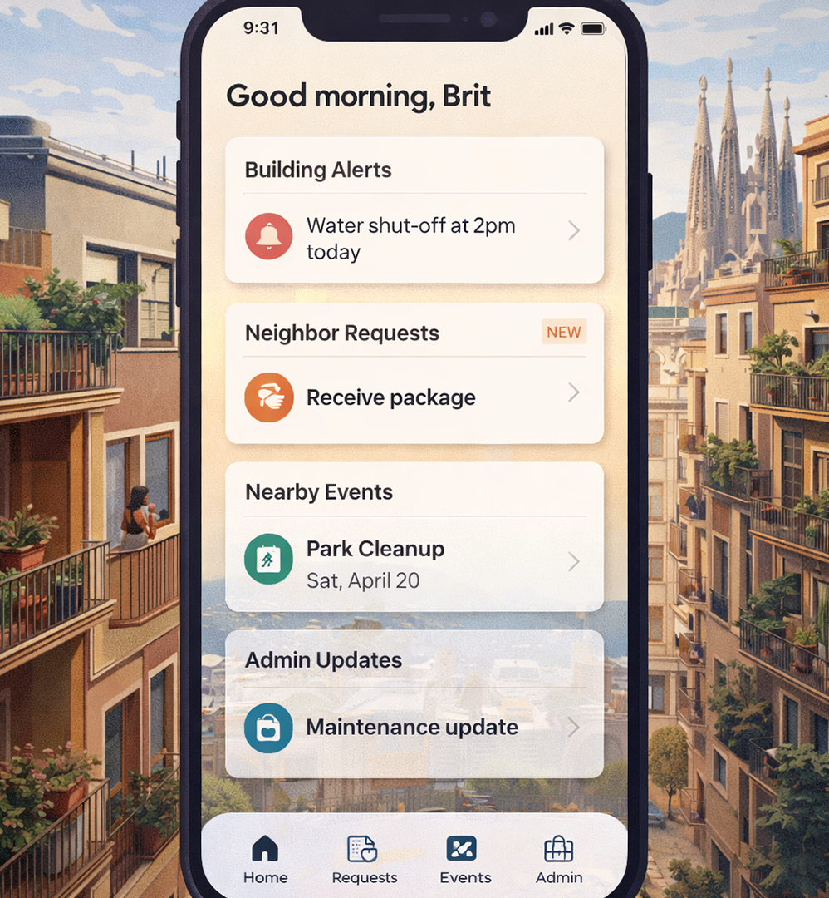

UX Research + Community Platform
Neighbors Platform
A hyper-local platform concept designed to help apartment residents connect, share updates, and build trust without increasing social pressure.
View Case StudySelected Work
A selection of projects spanning UX research, product strategy, service design, and interface development.

UX Research + Community Platform
A hyper-local platform concept designed to help apartment residents connect, share updates, and build trust without increasing social pressure.
View Case StudyUX Strategy + SaaS Platform Design
A UX research and prototype project exploring how trust breaks down across digital recruiting platforms, and how SaaS product design can improve transparency, credibility, and confidence for candidates and recruiters.
View Case StudyBehavior Design + Human Foundations
A concept exploring calm technology, ritual formation, and physical interaction design to support sustainable meditation habits.
View Case Study